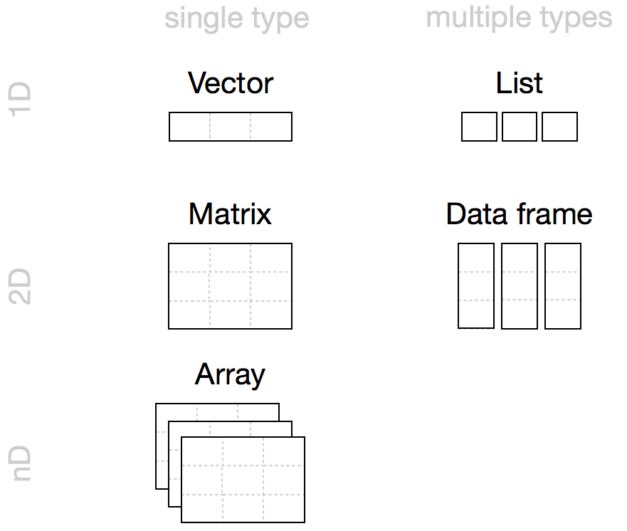

[1] 4[1] 4[1] 2Ecological Systems Modeling
Jan 15-19, 2024
$HOME/Labs/Intro_R_part2/Intro_to_R_part2b_objectsOperators.rmd-> operator= operator->= is used for assigning arguments in functions (more on this later)class() returns the class of datatypeof() returns the specific type of dataas.integer() functionintegercharacter# A character vector
# The months are in the wrong order
months <- c("Dec", "Apr", "Jan", "Mar")
# Create vector of categories (levels)
# Months are in correct order
month_levels <- c("Jan", "Feb", "Mar", "Apr", "May", "Jun",
"Jul", "Aug", "Sep", "Oct", "Nov", "Dec")
month_levels [1] "Jan" "Feb" "Mar" "Apr" "May" "Jun" "Jul" "Aug" "Sep" "Oct" "Nov" "Dec"# A character vector
# The months are in the wrong order
months <- c("Dec", "Apr", "Jan", "Mar")
# Create vector of categories (levels)
month_levels <- c("Jan", "Feb", "Mar", "Apr", "May", "Jun",
"Jul", "Aug", "Sep", "Oct", "Nov", "Dec")
# Convert vector to categorical data
months_fac <- factor(months, levels = month_levels)
months_fac[1] Dec Apr Jan Mar
Levels: Jan Feb Mar Apr May Jun Jul Aug Sep Oct Nov Decfactorinteger
dim# Plant species and perc. cover
species_id <- c("BRTE", "PUTR2", "FESIDA",
"AGDE", "ARTNOV")
perc_cover <- c(35, 10, 20, 30, 5)
# Make a data frame
spp_cover_df <- data.frame(species_id, perc_cover)
spp_cover_df species_id perc_cover
1 BRTE 35
2 PUTR2 10
3 FESIDA 20
4 AGDE 30
5 ARTNOV 5[1] "data.frame"dim() returns the data dimensions
str() returns the data structure
num [1:2, 1:3] 1 2 3 4 5 6 num [1:3, 1:6] 1 2 3 4 5 6 1 2 3 4 ...'data.frame': 5 obs. of 2 variables:
$ species_id: chr "BRTE" "PUTR2" "FESIDA" "AGDE" ...
$ perc_cover: num 35 10 20 30 5head() and tail() functionsnnames() or colnames() returns the column namesrownames() returns the row namesnrow() returns the number of rowsncol() returns the number of columnsmin() and max() value in a column$ symbolsummary() provides summary statistics for entire data frame&
TRUE returned if all conditions are met<- and =: